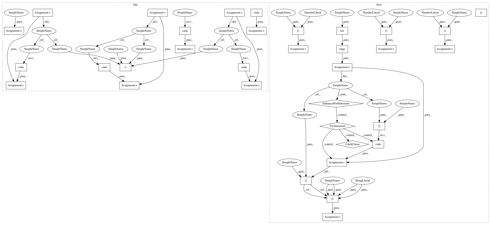

b696ad3275b2b7fb00fcd6b95d11d85f6d813101,nrekit/framework/bag_re.py,BagRE,train_model,#BagRE#,89
Before Change
avg_pos_acc = AverageMeter()
t = tqdm(train_loader)
for iter, data in enumerate(t):
label, bag_name, scope, token, pos1, pos2, mask = data
if torch.cuda.is_available():
token = token.cuda()
pos1 = pos1.cuda()
pos2 = pos2.cuda()
mask = mask.cuda()
label = label.cuda()
logits = self.forward(label, scope, token, pos1, pos2, mask)
loss = self.criterion(logits, label)
score, pred = logits.max(-1) // (B)
acc = float((pred == label).long().sum()) / label.size(0)
After Change
t = tqdm(self.train_loader)
for iter, data in enumerate(t):
if torch.cuda.is_available():
for i in range(len(data)):
try:
data[i] = data[i].cuda()
except:
pass
label = data[0]
bag_name = data[1]
scope = data[2]
args = data[3:]
logits = self.model(label, scope, *args)
loss = self.criterion(logits, label)
score, pred = logits.max(-1) // (B)
acc = float((pred == label).long().sum()) / label.size(0)
In pattern: SUPERPATTERN
Frequency: 4
Non-data size: 34
Instances
Project Name: thunlp/OpenNRE
Commit Name: b696ad3275b2b7fb00fcd6b95d11d85f6d813101
Time: 2019-06-30
Author: gaotianyu1350@126.com
File Name: nrekit/framework/bag_re.py
Class Name: BagRE
Method Name: train_model
Project Name: thunlp/OpenNRE
Commit Name: b696ad3275b2b7fb00fcd6b95d11d85f6d813101
Time: 2019-06-30
Author: gaotianyu1350@126.com
File Name: nrekit/framework/bag_re.py
Class Name: BagRE
Method Name: eval_model
Project Name: thunlp/OpenNRE
Commit Name: 7c15c881392d8a16ea90b52a71002384255fb385
Time: 2019-11-02
Author: gaotianyu1350@126.com
File Name: nrekit/framework/bag_re.py
Class Name: BagRE
Method Name: eval_model
Project Name: thunlp/OpenNRE
Commit Name: b696ad3275b2b7fb00fcd6b95d11d85f6d813101
Time: 2019-06-30
Author: gaotianyu1350@126.com
File Name: nrekit/framework/bag_re.py
Class Name: BagRE
Method Name: train_model
Project Name: thunlp/OpenNRE
Commit Name: 7c15c881392d8a16ea90b52a71002384255fb385
Time: 2019-11-02
Author: gaotianyu1350@126.com
File Name: nrekit/framework/bag_re.py
Class Name: BagRE
Method Name: train_model